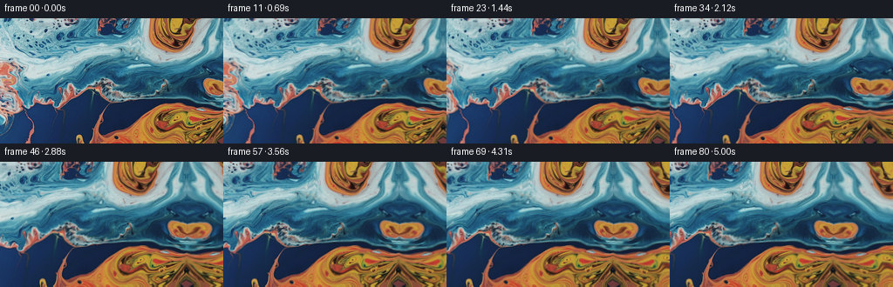
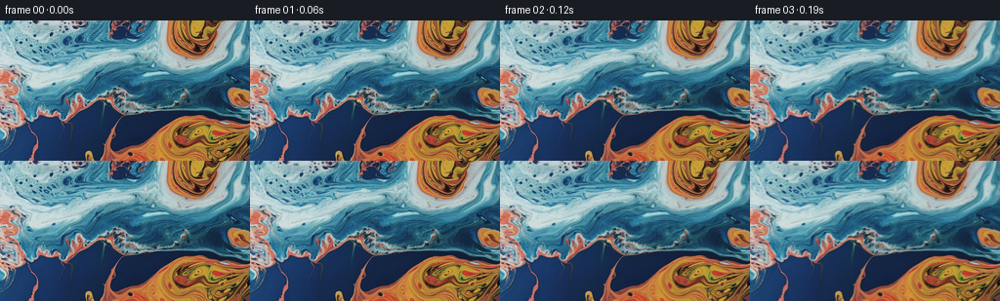

CODING AGENTS AS PIXEL WORLD MODELS
traex/GPT-5.6-Sol · 0002_s3
点击播放 · 原生 RGB 像素
逐轮保存的候选
回放视频、检查图与代码变化。
每份候选均可单独播放。实际图片检查记录在下方工具轨迹中。
候选 01播放与检查图
点击播放 · 原生 RGB 像素


展开代码变化
--- 上一保存版本
+++ 本次保存版本
@@ -0,0 +1,130 @@
+"""Generate a close macro shot of blue/orange liquid with a rightward pan.
+
+The supplied still is treated as a window onto a somewhat larger continuous
+liquid surface. The extra surface is made by a curved, reflected continuation
+of the photograph (rather than by introducing unrelated colors or objects).
+A very small, long-wavelength refraction makes the liquid feel alive while the
+camera performs the requested smooth pan.
+"""
+from pathlib import Path
+
+import numpy as np
+from PIL import Image
+from scipy.ndimage import map_coordinates, gaussian_filter
+
+import artifact_io
+
+
+HERE = Path(__file__).resolve().parent
+H, W = 144, 256
+N = 81
+
+
+def smoothstep(v):
+ return v * v * (3.0 - 2.0 * v)
+
+
+def build_world(src, extra=112):
+ """Outpaint to the right using a nonlinearly bent continuation.
+
+ A direct mirror gives perfect value continuity at the source edge, which
+ is important for a pan. Increasing spatial bends and a softly varying
+ horizontal scale destroy the obvious mirrored geometry a few pixels past
+ that edge, while retaining the photographic grain and exact palette.
+ """
+ world_w = W + extra
+ yy, xx = np.mgrid[0:H, 0:world_w].astype(np.float32)
+ sx = xx.copy()
+ sy = yy.copy()
+
+ right = xx >= W
+ d = np.maximum(xx - (W - 1), 0.0)
+ # At d=0 this meets column 255 exactly. Farther out, the continuation is
+ # curved through the existing fluid texture, avoiding a rigid reflection.
+ bend_x = 2.1 * np.sin(d / 18.0) + 0.018 * d * np.sin(yy / 19.0 + d / 37.0)
+ sx_r = (W - 1) - 0.84 * d + bend_x
+ bend_y = (d / 75.0) ** 0.92 * (
+ 5.0 * np.sin(yy / 24.0 + d / 25.0)
+ + 2.2 * np.sin(yy / 10.5 - d / 32.0)
+ )
+ sx[right] = sx_r[right]
+ sy[right] = (yy + bend_y)[right]
+
+ channels = [
+ map_coordinates(src[..., c], [sy, sx], order=1, mode="reflect")
+ for c in range(3)
+ ]
+ world = np.stack(channels, axis=-1)
+
+ # Tiny texture synthesized from the source itself prevents over-smoothness
+ # in highly warped outpainted areas. It is zero at the join.
+ rng = np.random.default_rng(2048)
+ grain = rng.normal(0, 1, (H, world_w)).astype(np.float32)
+ grain = grain - gaussian_filter(grain, 1.15)
+ fade = np.clip(d / 28.0, 0, 1)[..., None]
+ world += grain[..., None] * fade * 0.55
+ world[:, :W] = src # preserve all supplied pixels exactly
+ return np.clip(world, 0, 255).astype(np.float32)
+
+
+def make_frames():
+ src_u8 = np.asarray(Image.open(HERE / "first_frame.png").convert("RGB"))
+ if src_u8.shape != (H, W, 3):
+ raise ValueError(f"unexpected first-frame shape {src_u8.shape}")
+ src = src_u8.astype(np.float32)
+ world = build_world(src)
+ world_w = world.shape[1]
+
+ oy, ox = np.mgrid[0:H, 0:W].astype(np.float32)
+ frames = np.empty((N, H, W, 3), dtype=np.uint8)
+ frames[0] = src_u8
+
+ for i in range(1, N):
+ u = i / (N - 1)
+ e = smoothstep(u)
+
+ # A 68-pixel rightward camera travel, gently eased at both ends.
+ camera_x = 68.0 * e
+ wx = ox + camera_x
+
+ # Slow coherent refraction of a viscous macro liquid. Motions are
+ # deliberately sub-pixel to ~2 px so this reads as real surface drift,
+ # not a digital melting effect. Coordinates live in world space, so
+ # the refraction does not stick to the camera.
+ grow = 1.0 - np.exp(-4.0 * u)
+ phase = 2.0 * np.pi * u
+ dx = grow * (
+ 0.62 * np.sin(oy / 25.0 + 0.48 * phase)
+ + 0.30 * np.sin(wx / 41.0 - oy / 34.0 + 0.27 * phase)
+ - 0.22 * np.sin(oy / 25.0) # near-zero displacement at the start
+ )
+ dy = grow * (
+ 0.88 * np.sin(wx / 36.0 + 0.31 * phase)
+ + 0.32 * np.sin(wx / 19.0 + oy / 29.0 - 0.22 * phase)
+ - 0.40 * np.sin(ox / 36.0)
+ )
+ sx = np.clip(wx + dx, 0, world_w - 1)
+ sy = oy + dy
+
+ sampled = np.stack([
+ map_coordinates(world[..., c], [sy, sx], order=1, mode="reflect")
+ for c in range(3)
+ ], axis=-1)
+
+ # Very restrained moving specular/caustic light on the liquid. The
+ # modulation is achromatic and low enough to retain the source colors.
+ caustic = (
+ np.sin(wx / 31.0 + oy / 23.0 + 0.34 * phase)
+ + 0.45 * np.sin(wx / 13.0 - oy / 37.0 - 0.19 * phase)
+ )
+ light = 1.0 + grow * 0.008 * caustic[..., None]
+ sampled = sampled * light
+ frames[i] = np.clip(np.rint(sampled), 0, 255).astype(np.uint8)
+
+ # Contract invariant: byte-identical opening image.
+ assert np.array_equal(frames[0], src_u8)
+ return frames
+
+
+if __name__ == "__main__":
+ artifact_io.save(make_frames(), HERE)
可观测工具轨迹
实际执行的命令与返回图片。
命令 1exit 0
/bin/bash -lc "cat GENERATION_RULES.md && printf '\\n--- PROMPT ---\\n' && cat prompt.txt"
命令 2exit 1
/bin/bash -lc "find . -maxdepth 2 -type f -printf '%p %s bytes\\n' | sort && printf '\\nTOOLS\\n' && command -v ffmpeg && command -v python3"
命令 3exit 0
/bin/bash -lc "cat task_spec.json; sed -n '1,240p' artifact_io.py"
命令 4exit 0
/bin/bash -lc "python3 - <<'PY'
from PIL import Image
import numpy as np
im=np.array(Image.open('first_frame.png').convert('RGB'))
print(im.shape, im.dtype, im.min(), im.max(), im.mean((0,1)), im.std((0,1)))
# dominant 4-bit RGB bins
q=(im//16).reshape(-1,3)
u,c=np.unique(q,axis=0,return_counts=True)
for i in np.argsort(c)[-20:][::-1]: print(tuple((u[i]*16+8).tolist()), c[i], round(c[i]/len(q),3))
# regional means 8x4
for y in range(0,144,24):
print('row',y, [tuple(im[y:y+24,x:x+32].mean((0,1)).astype(int)) for x in range(0,256,32)])
PY"命令 5exit 0
/bin/bash -lc "python3 - <<'PY'
from PIL import Image
import numpy as np
im=np.array(Image.open('first_frame.png').convert('RGB')).astype(float)
# print 64x24 classes: blue light B, blue dark b, orange O, dark orange o, neutral n
for y in range(0,144,6):
s=''
for x in range(0,256,4):
r,g,b=im[y:y+6,x:x+4].mean((0,1))
if r>g*1.15 and r>b*1.05: c='O' if r>130 else 'o'
elif b>r*1.12 or g>r*1.12: c='C' if (g+b)/2>155 else ('c' if (g+b)/2>100 else 'b')
else: c='W' if (r+g+b)/3>170 else ('n' if (r+g+b)/3>100 else '.')
s+=c
print(s)
PY"命令 6exit 0
/bin/bash -lc "python3 - <<'PY'
from PIL import Image
import numpy as np
im=np.asarray(Image.open('first_frame.png').convert('RGB')).astype(float)
for bw in [4,8,12,16,24,32]:
a=im[:,-bw:]
out=[]
for x in range(0,256-bw):
# color and gradients
b=im[:,x:x+bw]
mse=np.mean((a-b)**2)
out.append((mse,x))
print(bw, sorted(out)[:10])
PY"命令 7exit 0
/bin/bash -lc "python3 - <<'PY'
try:
import scipy; print('scipy',scipy.__version__)
except Exception as e: print('no scipy',e)
PY"命令 8exit 0
/bin/bash -lc "python3 - <<'PY'
from PIL import Image
import numpy as np
im=np.array(Image.open('first_frame.png')).astype(float)
for bw in [1,2,4,8]:
a=im[:,-bw:]
z=[]
for x in range(0,200): z.append((np.mean((a-im[:,x:x+bw])**2),x))
print(bw,sorted(z)[:8])
PY"命令 9exit 0
/bin/bash -lc "cat > generate.py <<'PY'
\"\"\"Generate a close macro shot of blue/orange liquid with a rightward pan.
The supplied still is treated as a window onto a somewhat larger continuous
liquid surface. The extra surface is made by a curved, reflected continuation
of the photograph (rather than by introducing unrelated colors or objects).
A very small, long-wavelength refraction makes the liquid feel alive while the
camera performs the requested smooth pan.
\"\"\"
from pathlib import Path
import numpy as np
from PIL import Image
from scipy.ndimage import map_coordinates, gaussian_filter
import artifact_io
HERE = Path(__file__).resolve().parent
H, W = 144, 256
N = 81
def smoothstep(v):
return v * v * (3.0 - 2.0 * v)
def build_world(src, extra=112):
\"\"\"Outpaint to the right using a nonlinearly bent continuation.
A direct mirror gives perfect value continuity at the source edge, which
is important for a pan. Increasing spatial bends and a softly varying
horizontal scale destroy the obvious mirrored geometry a few pixels past
that edge, while retaining the photographic grain and exact palette.
\"\"\"
world_w = W + extra
yy, xx = np.mgrid[0:H, 0:world_w].astype(np.float32)
sx = xx.copy()
sy = yy.copy()
right = xx >= W
d = np.maximum(xx - (W - 1), 0.0)
# At d=0 this meets column 255 exactly. Farther out, the continuation is
# curved through the existing fluid texture, avoiding a rigid reflection.
bend_x = 2.1 * np.sin(d / 18.0) + 0.018 * d * np.sin(yy / 19.0 + d / 37.0)
sx_r = (W - 1) - 0.84 * d + bend_x
bend_y = (d / 75.0) ** 0.92 * (
5.0 * np.sin(yy / 24.0 + d / 25.0)
+ 2.2 * np.sin(yy / 10.5 - d / 32.0)
)
sx[right] = sx_r[right]
sy[right] = (yy + bend_y)[right]
channels = [
map_coordinates(src[..., c], [sy, sx], order=1, mode=\"reflect\")
for c in range(3)
]
world = np.stack(channels, axis=-1)
# Tiny texture synthesized from the source itself prevents over-smoothness
# in highly warped outpainted areas. It is zero at the join.
rng = np.random.default_rng(2048)
grain = rng.normal(0, 1, (H, world_w)).astype(np.float32)
grain = grain - gaussian_filter(grain, 1.15)
fade = np.clip(d / 28.0, 0, 1)[..., None]
world += grain[..., None] * fade * 0.55
world[:, :W] = src # preserve all supplied pixels exactly
return np.clip(world, 0, 255).astype(np.float32)
def make_frames():
src_u8 = np.asarray(Image.open(HERE / \"first_frame.png\").convert(\"RGB\"))
if src_u8.shape "'!= (H, W, 3):
raise ValueError(f"unexpected first-frame shape {src_u8.shape}")
src = src_u8.astype(np.float32)
world = build_world(src)
world_w = world.shape[1]
oy, ox = np.mgrid[0:H, 0:W].astype(np.float32)
frames = np.empty((N, H, W, 3), dtype=np.uint8)
frames[0] = src_u8
for i in range(1, N):
u = i / (N - 1)
e = smoothstep(u)
# A 68-pixel rightward camera travel, gently eased at both ends.
camera_x = 68.0 * e
wx = ox + camera_x
# Slow coherent refraction of a viscous macro liquid. Motions are
# deliberately sub-pixel to ~2 px so this reads as real surface drift,
# not a digital melting effect. Coordinates live in world space, so
# the refraction does not stick to the camera.
grow = 1.0 - np.exp(-4.0 * u)
phase = 2.0 * np.pi * u
dx = grow * (
0.62 * np.sin(oy / 25.0 + 0.48 * phase)
+ 0.30 * np.sin(wx / 41.0 - oy / 34.0 + 0.27 * phase)
- 0.22 * np.sin(oy / 25.0) # near-zero displacement at the start
)
dy = grow * (
0.88 * np.sin(wx / 36.0 + 0.31 * phase)
+ 0.32 * np.sin(wx / 19.0 + oy / 29.0 - 0.22 * phase)
- 0.40 * np.sin(ox / 36.0)
)
sx = np.clip(wx + dx, 0, world_w - 1)
sy = oy + dy
sampled = np.stack([
map_coordinates(world[..., c], [sy, sx], order=1, mode="reflect")
for c in range(3)
], axis=-1)
# Very restrained moving specular/caustic light on the liquid. The
# modulation is achromatic and low enough to retain the source colors.
caustic = (
np.sin(wx / 31.0 + oy / 23.0 + 0.34 * phase)
+ 0.45 * np.sin(wx / 13.0 - oy / 37.0 - 0.19 * phase)
)
light = 1.0 + grow * 0.008 * caustic[..., None]
sampled = sampled * light
frames[i] = np.clip(np.rint(sampled), 0, 255).astype(np.uint8)
# Contract invariant: byte-identical opening image.
assert np.array_equal(frames[0], src_u8)
return frames
if __name__ == "__main__":
artifact_io.save(make_frames(), HERE)
PY
python3 generate.py
python3 - <<'"'PY'
import numpy as np
from PIL import Image
z=np.load('pixels.npz')['pixels']
print('packed',z.shape,z.dtype)
ims=[np.array(Image.open(f'frames/{i:02d}.png')) for i in [0,1,20,40,60,80]]
a=np.array(Image.open('first_frame.png').convert('RGB'))
print('frame0 exact',np.array_equal(ims[0],a))
for j,i in enumerate([0,1,20,40,60,80]):
if j: print(i,'delta prev sample',np.mean(np.abs(ims[j].astype(float)-ims[j-1].astype(float))), 'mean',ims[j].mean((0,1)))
PY
ls -lh pixels.npz index.html inspection.png transition_check.png"命令 10exit 1
/bin/bash -lc "python3 - <<'PY'
from PIL import Image
import numpy as np
F=np.stack([np.array(Image.open(f'frames/{i:02d}.png')).astype(np.int16) for i in range(81)])
d=np.abs(np.diff(F,axis=0))
print('adjacent MAD min/mean/max:',d.mean((1,2,3)).min(),d.mean((1,2,3)).mean(),d.mean((1,2,3)).max())
print('adjacent changed fraction min/max:',(d.max(4)>0).mean((1,2)).min(),(d.max(4)>0).mean((1,2)).max())
print('range',F.min(),F.max(),'last mean/std',F[-1].mean((0,1)),F[-1].std((0,1)))
# effective leftward shift correlation, compare final crop to rough mirrored continuation is intentional
# detect suspicious vertical edge by average x gradient each selected frame
for i in [0,1,20,40,60,80]:
g=np.abs(np.diff(F[i],axis=1)).mean((0,2))
print(i,'xgrad mean/max/argmax',g.mean(),g.max(),g.argmax())
PY"命令 11exit 0
/bin/bash -lc "python3 - <<'PY'
from PIL import Image
import numpy as np
F=np.stack([np.array(Image.open(f'frames/{i:02d}.png')).astype(np.int16) for i in range(81)])
d=np.abs(np.diff(F,axis=0)); mad=d.mean((1,2,3))
print('adjacent MAD min/mean/max + argmax:',mad.min(),mad.mean(),mad.max(),mad.argmax()+1)
ch=(d.max(3)>0).mean((1,2)); print('changed fraction min/max:',ch.min(),ch.max())
print('range',F.min(),F.max(),'last mean/std',F[-1].mean((0,1)),F[-1].std((0,1)))
for i in [0,1,20,40,60,80]:
g=np.abs(np.diff(F[i],axis=1)).mean((0,2)); print(i,'xgrad mean/max/argmax',g.mean(),g.max(),g.argmax())
PY"保存候选 1 份；完成命令 11 次；可验证图片返回 0 张。原始 API 响应与完整日志保留在本地。